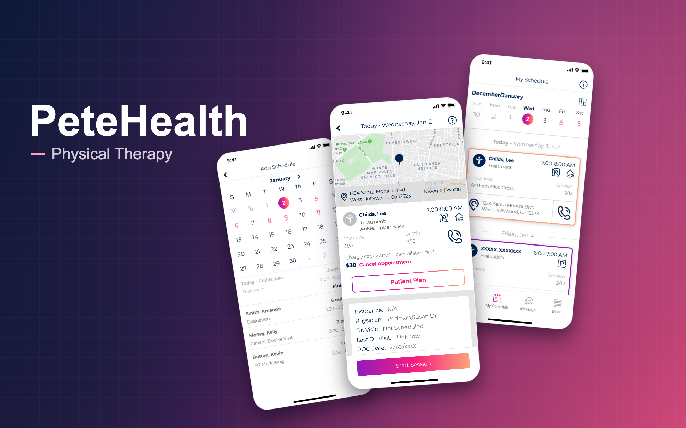

Healthcare · Physical Therapy · Product Design
PeteHealth
Physical therapy healthcare experience helping patients access care, understand treatment, and manage their recovery journey.
Overview
As the founding designer for PeteHealth, I helped shape the early product experience across mobile and responsive web, focusing on making physical therapy care easier to access, understand, and manage.
The work explored how patients could move through care-related tasks more clearly, from learning about services to reviewing appointments, treatment information, and recovery support.
Early-stage product case study
This page highlights PeteHealth work from the early product stage, including mobile and responsive web design for physical therapy care.
As the founding designer, I helped define the initial user experience, product direction, and interface patterns. Because this was a short early-stage engagement, the case study focuses on the product foundation, core design decisions, and key experience patterns rather than presenting a long-form launch case study.
The challenge
Physical therapy can be confusing for patients, especially when they are trying to understand treatment options, appointments, recovery steps, and what to expect from care.
The challenge was to design a more approachable digital experience that helped patients feel informed and confident while navigating physical therapy services and recovery-related tasks.
Because PeteHealth was in an early product stage, the work also needed to establish a clear foundation for the experience across both mobile and responsive web.
Product goals
Make physical therapy easier to understand
Help patients understand services, next steps, and care-related information without feeling overwhelmed.
Support mobile-first behavior
Design flows that worked well for patients managing care from their phones.
Create a calm healthcare experience
Use clear hierarchy, simple language, and supportive UI patterns to reduce friction.
Connect care tasks into one experience
Bring appointment, treatment, and recovery-related moments into a more cohesive product flow.
Build an early product foundation
Establish interface patterns and experience direction that could support future product growth.
Design for trust
Make the experience feel credible, professional, and supportive without feeling cold or overly clinical.
What I designed
As the founding designer, I worked across the early PeteHealth product experience, including mobile app flows, responsive web layouts, service discovery, appointment-related flows, treatment information, account areas, and interface patterns for a consumer healthcare product.
The design challenge was creating a clear product foundation for physical therapy care that felt simple, trustworthy, and easier for patients to move through.
Key product areas
Mobile care experience
Designed mobile-first screens for patients managing physical therapy-related tasks.
Responsive web experience
Created web layouts that could support service discovery, education, and conversion.
Appointment-related flows
Helped shape experiences around booking, reviewing, or managing care moments.
Treatment and recovery information
Organized care-related information so it felt clear, useful, and easy to scan.
Consumer healthcare UI
Designed interface patterns that balanced warmth, trust, and usability.
Early product direction
Helped shape the initial structure, tone, and design direction for the product experience.
Design decisions
Keep the experience approachable
Physical therapy needed to feel supportive and professional without becoming intimidating.
Design for quick understanding
Patients should be able to understand services, next steps, and treatment information without extra effort.
Mobile-first clarity
The mobile experience needed to support fast decisions and easy task completion.
Trust through simplicity
Clear layouts, direct language, and predictable patterns helped the product feel more credible.
Healthcare, but warmer
The visual and interaction style needed to feel more personal than a traditional medical tool.
Build a flexible foundation
Since the product was early-stage, the experience needed to be clear enough for the first version while flexible enough to grow.
What this project shows
PeteHealth shows my ability to step into an early-stage healthcare product as a founding designer, shape the initial product direction, and create mobile and responsive web experiences from the ground up.
It also reflects my experience designing consumer healthcare workflows that balance clarity, trust, and approachability.
Designing approachable healthcare experiences
This work focused on making physical therapy care easier to access and understand through clear mobile flows, responsive web patterns, and a warmer consumer healthcare experience.